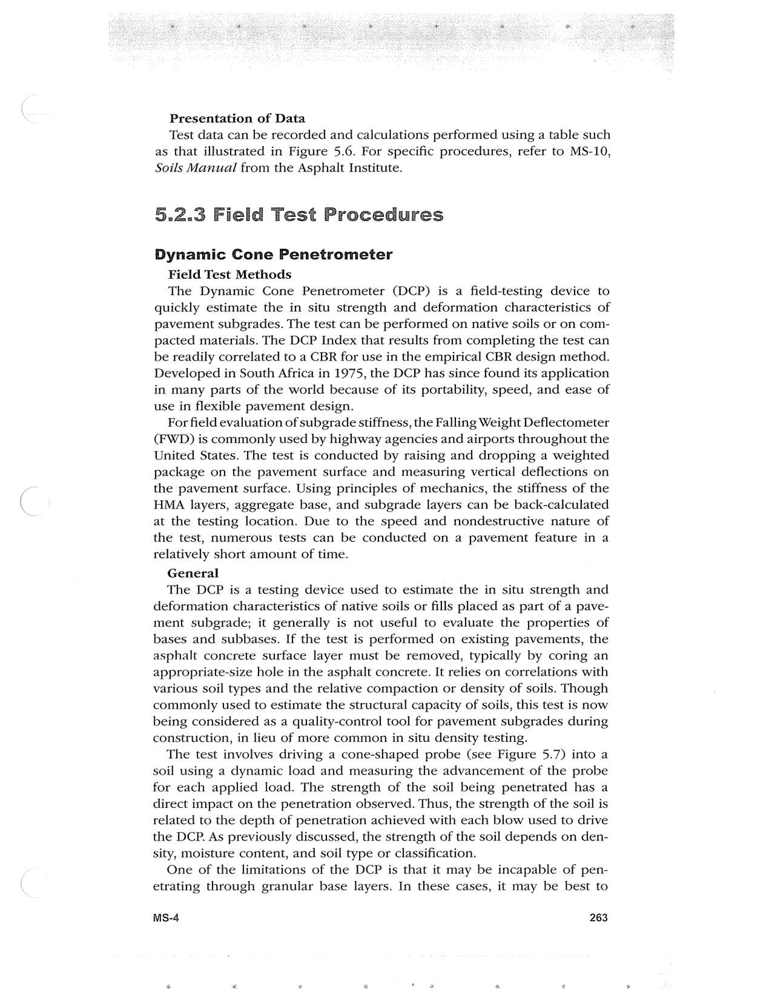

PDF page 297 · book page sequence 263


Searchable transcription
Unproofread OCR · 461 detected words; mean OCR confidence 95.99. Check technical values, symbols and table columns against the scan.
Presentation of Data
Test data can be recorded and calculations performed using a table such as that illustrated in Figure 5.6. For specific procedures, refer to MS-10, Soils Manual from the Asphalt Institute.
5.2.3 Field Test Procedures
Dynamic Cone Penetrometer
Field Test Methods
The Dynamic Cone Penetrometer (DCP) is a field-testing device to quickly estimate the in situ strength and deformation characteristics of pavement subgrades. The test can be performed on native soils or on com- pacted materials. The DCP Index that results from completing the test can be readily correlated to a CBR for use in the empirical CBR design method. Developed in South Africa in 1975, the DCP has since found its application in many parts of the world because of its portability, speed, and ease of use in flexible pavement design.
For field evaluation of subgrade stiffness, the Falling Weight Deflectometer (FWD) is commonly used by highway agencies and airports throughout the United States. The test is conducted by raising and dropping a weighted package on the pavement surface and measuring vertical deflections on the pavement surface. Using principles of mechanics, the stiffness of the HMA layers, aggregate base, and subgrade layers can be back-calculated at the testing location. Due to the speed and nondestructive nature of the test, numerous tests can be conducted on a pavement feature in a relatively short amount of time.
General
The DCP is a testing device used to estimate the in situ strength and deformation characteristics of native soils or fills placed as part of a pave- ment subgrade; it generally is not useful to evaluate the properties of bases and subbases. If the test is performed on existing pavements, the asphalt concrete surface layer must be removed, typically by coring an appropriate-size hole in the asphalt concrete. It relies on correlations with various soil types and the relative compaction or density of soils. Though commonly used to estimate the structural capacity of soils, this test is now being considered as a quality-control tool for pavement subgrades during construction, in lieu of more common in situ density testing.
The test involves driving a cone-shaped probe (see Figure 5.7) into a soil using a dynamic load and measuring the advancement of the probe for each applied load. The strength of the soil being penetrated has a direct impact on the penetration observed. Thus, the strength of the soil is related to the depth of penetration achieved with each blow used to drive the DCP. As previously discussed, the strength of the soil depends on den- sity, moisture content, and soil type or classification.
One of the limitations of the DCP is that it may be incapable of pen- etrating through granular base layers. In these cases, it may be best to
MS-4 263